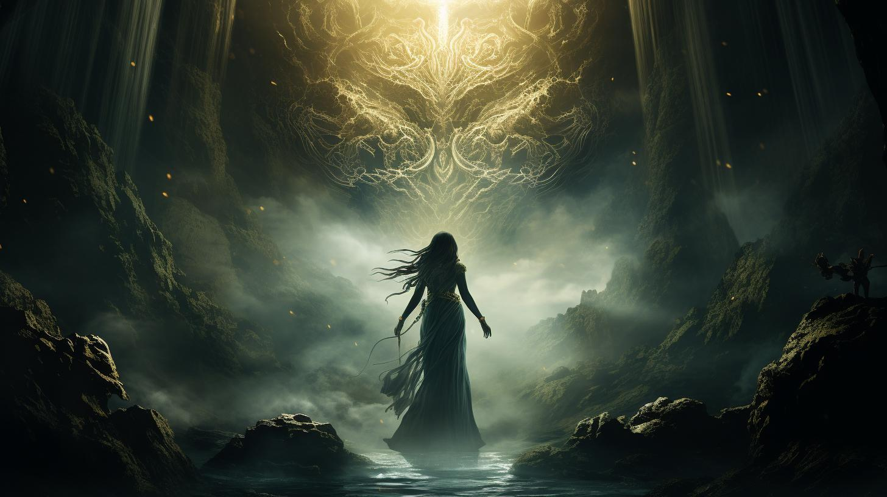

Welcome to
Philippine Mythology and Folklores!

Step right into the magical world of Philippine mythology and folklore! We're here to take you on an enchanting journey through the stories, legends, and mystical creatures that have shaped the rich cultural heritage of the Philippines. Whether you're a seasoned myth-lover or a curious newcomer, there's something here for everyone.
Dive deep into our treasure trove of epic tales, from heroic figures like Bernardo Carpio to the enchanting beauty of Maria Makiling. Explore the mysterious realms of mythical creatures like the Tikbalang and the Bakunawa. And don't forget to check out our section on haunted places—if you dare!
Join us as we bring these ancient stories to life, preserving and celebrating the incredible myths and legends that continue to inspire and captivate. So grab your imaginary sword, put on your explorer hat, and let's embark on this fantastical adventure together. Ready? Let's go!